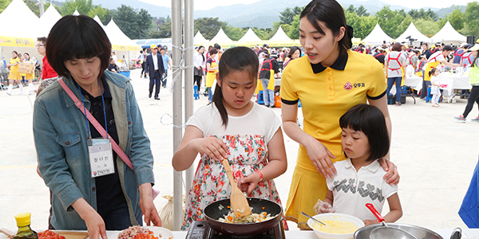
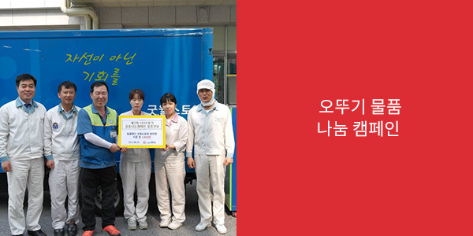

지속가능경영
- 사회공헌
- 식품을 통해 인류의 건강과 행복을 추구해오고 있는 ㈜오뚜기는 기업의 사회적 기여를 성실히 실천해 오고 있습니다.
사회복지
- 선천성 심장병 어린이 후원
- 선천성 심장병 어린이 후원은 ㈜오뚜기의 가장 대표적인 사회공헌 사업으로 나라의 희망이며 미래사회의 주인공이 바로 어린이라는 생각에서 시작되었습니다. 선천성 심장병을 앓는 어린이들은 10세 이전에 수술을 받지 못하면 생명을 잃을 수도 있기 때문에, 경제적인 이유로 수술을 받지 못해 고귀한 생명을 놓치는 일이 없도록 하기 위해 1992년7월부터 한국심장재단과 결연을 맺고 선천성 심장병 어린이 수술비 후원사업을 시작하였습니다.
- 1992년부터 25여년이 지난 지금까지 IMF, 장기적인 경기불황 등 갖가지 어려움들이 있었음에도 불구하고 심장병 어린이 후원을 멈추지 않았으며, 오히려 후원 인원을 단계적으로 늘려왔습니다. 1992년 매월 5명 후원을 시작으로 현재는 매월 23명의 어린이에게 새 생명을 찾아주고 있습니다.
- 선천성 심장병 어린이 후원은 수술비 후원으로만 끝나는 것이 아닙니다. 완치된 어린이와 그 가족에게 지속적인 관심을 가지고 회사의 다양한 행사에 초청하여 즐거운 시간을 보낼 수 있게 하고 있습니다.
- 매년 5월 개최되는 '스위트홈 오뚜기 가족요리 페스티발'에 선천성 심장병 완치 어린이들을 초청하여 요리교실을 진행하고 있습니다. 또한, 매년 10월에는 심장병 완치 어린이와 가족을 충북 음성에 소재한 ㈜오뚜기 대풍공장에 초청하여 공장견학, 신제품 요리시연회도 진행하고 있습니다.
- 밀알재단 굿윌스토어 장애인지원
- 밀알재단 굿윌스토어 장애인지원 협력사업은 장애인 학교와 장애인 재활센터를 운영하는 밀알재단의 굿윌스토어(Goodwill Store)와 함께 장애인의 자립을 돕는 협력사업 입니다. ‘굿윌스토어’는 기업과 개인에게 생활용품이나 의류 등의 물품을 기증받은 후, 장애인들이 잘 손질하여 저렴한 가격으로 판매하는 곳으로 장애인들의 재활과 자립을 돕고 있습니다.

- 오뚜기 선물세트 임가공 위탁
- 오뚜기 선물세트 임가공 위탁은 밀알재단 굿윌스토어 송파점과 도봉점에 ㈜오뚜기가 생산하는 주요 선물세트 조립 작업을 위탁하는 사업입니다. 선물세트 임가공은 단순히 후원금을 기부해 금전적으로 도움을 주는 것이 아니라, 일하고 그에 대한 대가를 받아서 스스로 자립할 수 있도록 장애인들의 재활을 돕는 새로운 사회공헌활동의 모범사례라 할 수 있습니다.
(2018년 12월 기준 생산량 4,725,885 세트)
- 오뚜기 제품 기증
- 오뚜기 제품 기증은 밀알재단 굿윌스토어 송파점, 도봉점, 전주점, 구리점에 매월 오뚜기제품을 기증하여 소비자들에게 적절한 가격으로 판매, 그 수익금으로 장애인 직원들의 임금과 복지에 도움을 주도록 하는 사업입니다.
(2018년 12월 기준 2,003,227천원)

- 오뚜기 임직원 봉사활동
- 오뚜기 임직원 봉사활동은 매주 수요일과 금요일에 굿윌스토어 도봉정과 송파점에 자발적으로 자원봉사활동에 참여하여 선물세트 임가공 작업 및 중고품 수선, 굿윌스토어 제품 진열 및 판매, 장애인 점심 배식 등을 돕는 활동입니다.
(2018년 12월 기준 1,908명 참여) - 오뚜기 물품 기증 캠페인
- 오뚜기 물품 기증 캠페인은 오뚜기 임직원들의 사내물품 기증 캠페인으로 오뚜기 임직원이 기증한 물품은 장애인들이 깨끗이 손질 및 수선하여 매장에서 저렴한 가격에 판매되고 있습니다.
(2018년 12월 기준 21,890참여 , 100,564점 기증) - 또한 지난 2013년 7월부터는 매년 프로야구 넥센히어로즈 야구단의 홈구장에 밀알재단 굿윌스토어 장애인 임직원을 초청하여 야구관람 및 시구 시타 행사를 진행하는 오뚜기데이 행사를 진행하고 있으며, 2012년부터는 매년 오뚜기 대풍공장 견학초청도 실시하고 있습니다.
